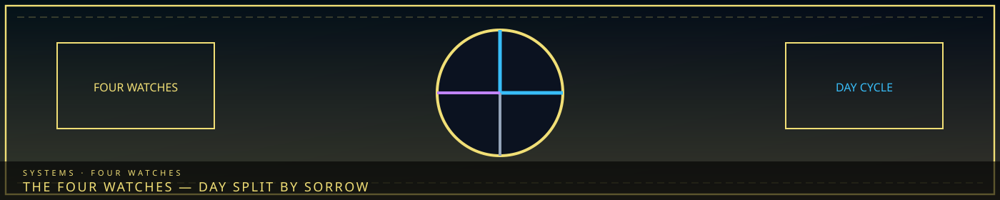

/// RAPID JUMP:
STATUS: ARCHIVE VERIFIED |
CLEARANCE: LEVEL-4 OVERSIGHT |
PROTOCOL: REVERIE DIRECTORATE
ARTICLE
DISCUSSION
SOURCE
HISTORY
YEAR 4,238 · DAWN OF HOPE
ORDEALS · TIME AXIS
The Four Watches
“The city does not remember how many times it has done this.”

Overview
The Four Watches are the time axis of Ordeals. Color is the Han type (Blue Lament, Black Weight, Pale Void, Grey Grudge, Purple raw Han). Time is severity. This page is Dawn / Noon / Dusk / Midnight in LC terms — First, Second, Third, and Tide Watch. It is not Whisper / Surge / Breach / Abyss. That four-name overlay mixed city atmosphere with Ordeals and is retired.
One Ordeal per Time per day. Times escalate. Color articles list the named manifestations: Blue — Mourning Host · Black — Crushing Tide · Pale — The Fading · Grey — Resentful March · Purple — The Corruption. Hub: Ordeals framework.
The four times
| Time | Severity | When | Trigger |
|---|---|---|---|
| First Watch | Minor | Early Management, low accumulation | After 2–3 work cycles |
| Second Watch | Moderate | Mid-Management, Han building | After 5–6 work cycles |
| Third Watch | Major | Late Management, approaching Tide | After 8+ cycles or near-Tide |
| Tide Watch | Catastrophic | Sorrow Tide peak; facility-wide | Tide or major breach cascade |
First Watch: five to ten weak bodies. Level 2 team. A warning that free Han is accumulating. Named examples: Blue Weeping Cluster, Black Rolling Weight, Pale The Forgotten, Grey Resentful Three, Purple The Seeping. They last about a minute if ignored, then move or fade — but they leave residue (cracked floors, missing memories, Fracture-like film). Also filed: Blue Leaking Eyes / Salt Puddles; Black Grinding Slab / Lead Footsteps; Pale Blanking / Pale Tracks; Grey Brawler / Spiteful Few; Purple Ooze / Spore Patches.
Second Watch: ten to twenty bodies, or fewer stronger ones. Level 3+ with M.A.W. Corridors stop being a swarm of larvae and start being a fight. Grey forms battalions. Purple roots into the Han-flow. Pale starts erasing ranks, not single names. Named: Blue Brine Rain / Sobbing Wall / Wailing Choir; Black Crushing Column / Falling Mass / Sinking Floor; Pale Bleeding White / Erased Ranks / Faceless Legion; Grey Blade Wall / Grey Battalion / Rust Battalion; Purple Bloom / Rooted / Spore Field.
Third Watch: a single large entity or a coordinated horde. Level 4+, specialized M.A.W., Containment Lead oversight. If Third Watch is not handled it does not politely become Tide Watch later — it is the on-ramp. Dekan’s manual treats an unsuppressed Third as a floor-loss risk, not a delay. Named: Blue Brine Walkers / Drowned Procession / Hollow Bells; Black Buried Pillar / Collapsing Arch / Pressing Vault; Pale Featureless / Pale Hush / Whiteout; Grey Forge March / Iron March / War Machine; Purple Bloom Hosts / Mycelium / Parasite.
Tide Watch: facility-wide. Echo-Cores and their top teams. An unsuppressed Tide Watch before dawn can permanently damage the Hand of Change. Ordeals are mortal; they do not return from the Weeping. Tide Watch is the only suppression that can drop facility Han-density enough to matter city-wide — which is why Majin vetoed “deliberately spawn Tide Watches to bleed the city” three times. Named: Blue Drowned World / Mother Flood / Ocean of Tears; Black Final Ton / The Mountain / Sinking Continent; Pale Final Blank / The Nothing / The Unmade; Grey Arbiter / Gallows Field / The Judge; Purple Bloom-Wave / Fracture Wave / Garden of Rot. Facility upgrades freeze during Tide Watch the same way they freeze during Meltdown — different alarm, same “no Architect crews in the corridor.”
Han-density and warning
Every work cycle leaks residual Han into the facility atmosphere. The Han-Density Gauge tracks free (uncontained) energy. Clear 0–20% (no Ordeal risk). Elevated 21–40% (First Watch possible). Critical 41–60% (Second). Overload 61–80% (Third). Cascading 81–100% (Tide imminent).
Warning goes out on the Whisper-Thread 30–60 seconds before spawn: Color, Time, estimated floor/corridor/sector, recommended team. Ordeals are hostile to everything, including breached Sorrow Entities. Same-color Ordeals do not attack each other; different colors will fight. PURPLE can parasitically bond with a Sorrow Entity and temporarily empower it. Suppression yields residual Han-Energy (First Watch ~5% of daily quota; Tide Watch ~25%), lowers the gauge, and yields no M.A.W. — Ordeals dissolve on death.
Retired overlay
Older wiki text named four events Whisper, Surge, Breach, and Abyss and mapped them to morning / midday / evening / night. That list does not match SOMNARAK_ORDEALS_FRAMEWORK.md. The canon grid is five colors × four watches.